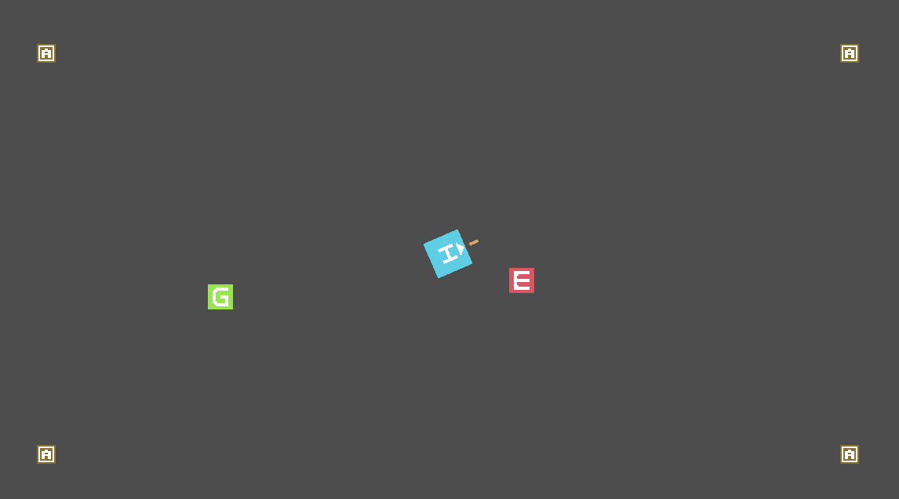
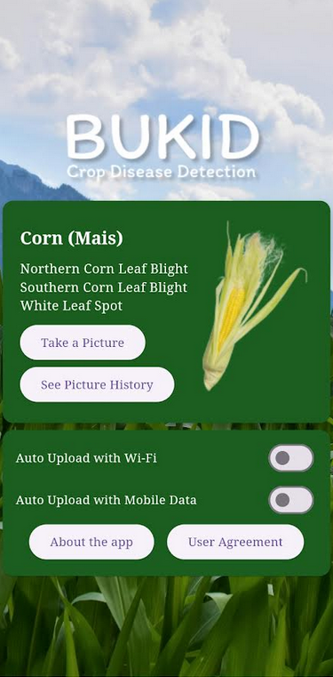
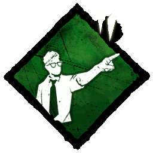
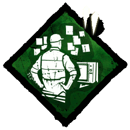
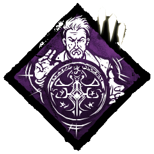

About
I am a student in University of the Philippines - Los Baños taking BS Computer Science. I was born in Lopez, Quezon on February 12, 2002. My current interests are mostly aligned with the development of video games such as pixel art and game development across different engines but for now I am focusing on Godot.
I see myself in the future as someone who has a main job to fund my interest of making video games and side projects.
Previous Projects
Hunter and Chitter

A game developed using Godot. It is still a work in progress.
Corn Project

A mobile application that uses a model to determine the sickness of a corn plant using an image of its leaves
Skills

Leadership

HTML & CSS

JavaScript